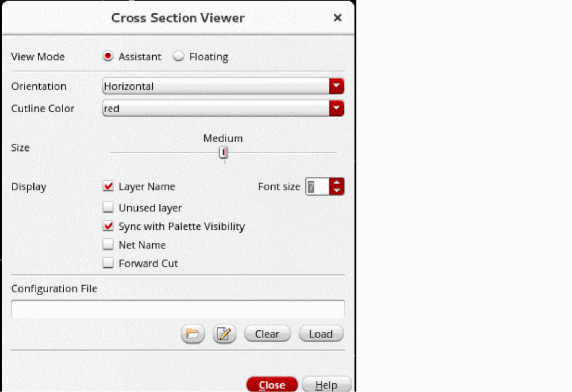
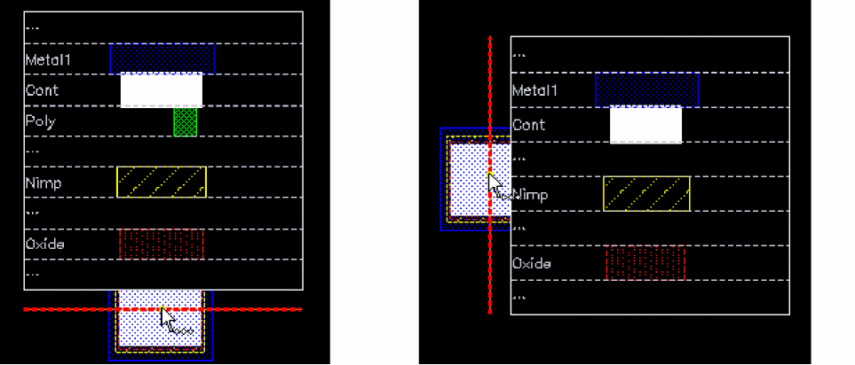

Specifying Cross Section Viewer Settings
To specify the settings for viewing cross sections of a layout in Layout MXL:
-
From the menu bar in your layout design, do one of the following:
The cross section viewer is displayed. Also, a cutline is displayed on the canvas corresponding to the mouse pointer. -
Right-click on the canvas and select Options from the Cross Section shortcut menu.
The Cross Section Viewer form is displayed.
 - Select the preferred View Mode as Assistant or Floating.
-
Select the Orientation of the cutline as Horizontal or Vertical.
The following image shows how the cutline appears depending on the orientation, when you view a cross section.
 - Select a color of your choice for the cutline, from Cutline Color.
- Drag the slider to set the size for the cutline as Small, Medium, or Large, from Size.
- Specify the display settings, whether you want the names of used layers, unused layers, and nets to be displayed in the cross section. You can enable Forward Cut to display the vias present between two adjacent layers even if those vias are not directly under the cutline.
-
If you want to customize the cross section display, select the configuration file that contains the settings for displaying a cross section.
- Use Select configuration file on disk to select an existing configuration file.
-
Use Create or edit configuration file
to edit the specified file or generate a new one and edit it.
You can customize details such as the metal thickness, layers or materials skipped, or layers merged in the cross section viewer. For more information, see Cross Section Viewer Configuration File.
-
Click Load to load the specified configuration file.
The specified settings are used for displaying the cross section.
Related Topics
Viewing the Cross Section of a Layout
Return to top